第一章:深度学习和PyTorch简介
活动1:创建一个单层神经网络
- 导入所需的库:
import torch import torch.nn as nn import matplotlib.pyplot as plt
- 创建随机值的虚拟输入数据(
x)和仅包含0和1的虚拟目标数据(y)。将数据存储在PyTorch张量中。张量x的大小应该是(100，5)，而y的大小应该是(100，1):x = torch.randn(100,5) y = torch.randint(0, 2, (100, 1)).type(torch.FloatTensor)
- Define the architecture of the model and store it in a variable named
model. Remember to create a single-layer model:model = nn.Sequential(nn.Linear(5, 1), nn.Sigmoid())
定义要使用的损失函数。使用均方误差损失函数:
loss_function = torch.nn.MSELoss()
定义模型的优化器。使用Adam优化器和0.01的学习率:
optimizer = torch.optim.Adam(model.parameters(), lr=0.01)
- Run the optimization for 100 iterations. In each iteration, print and save the loss value:
losses = [] for i in range(100): y_pred = model(x) loss = loss_function(y_pred, y) print(loss.item()) losses.append(loss.item()) optimizer.zero_grad() loss.backward() optimizer.step()最终损失应该约为0.238。
- 打印最终重量和偏差的值。总共应该有五个权重(输入数据的每个特征一个)和一个偏差值:
model.state_dict()
- Make a line plot to display the loss value for each iteration step:
plt.plot(range(0,100), losses) plt.show()
结果图应该如下所示:
图1.8:整个训练过程中的损失函数
第二章:神经网络的构建模块
活动2:执行数据准备
解决方案:
- 导入所需的库:
import pandas as pd
- Using pandas, load the text file. Considering that the previously downloaded text file has the same formatting as a CSV file, you can read it using the
read_csv()function. Make sure to change the header argument toNone:data = pd.read_csv("YearPredictionMSD.txt", header=None, nrows=50000) data.head()注意
为了避免内存限制，在读取文本文件时使用
nrows参数，以便读取整个数据集的较小部分。在前面的示例中，我们正在读取前50，000行。 - 验证数据集中是否存在任何定性数据。
data.iloc[0,:]
- Check for missing values.
如果您在先前用于此目的的代码行中添加一个额外的
sum()函数，您将获得整个数据集中缺失值的总和，而不区分列:data.isnull().sum().sum()
- 检查异常值:
outliers = {} for i in range(data.shape[1]): min_t = data[data.columns[i]].mean() - ( 3 * data[data.columns[i]].std()) max_t = data[data.columns[i]].mean() + ( 3 * data[data.columns[i]].std()) count = 0 for j in data[data.columns[i]]: if j < min_t or j > max_t: count += 1 percentage = count/data.shape[0] outliers[data.columns[i]] = "%.3f" % percentage print(outliers) - 从目标数据中分离特征:
X = data.iloc[:, 1:] Y = data.iloc[:, 0]
- 使用标准化方法重新调整特征数据:
X = (X - X.mean())/X.std() X.head()
- 将数据分成三组:训练、验证和测试。使用您喜欢的方法:
from sklearn.model_selection import train_test_split X_shuffle = X.sample(frac=1) Y_shuffle = Y.sample(frac=1) x_new, x_test, y_new, y_test = train_test_split(X_shuffle, Y_shuffle, test_size=0.2, random_state=0) dev_per = x_test.shape[0]/x_new.shape[0] x_train, x_dev, y_train, y_dev = train_test_split(x_new, y_new, test_size=dev_per, random_state=0)
生成的形状应该如下所示:
(30000, 90) (30000, ) (10000, 90) (10000, ) (10000, 90) (10000, )
活动3:执行数据准备
解决方案:
- 导入所需的库:
import torch import torch.nn as nn
- 针对前一活动中创建的所有三组数据，从目标中分割要素。将数据帧转换成张量:
x_train = torch.tensor(x_train.values).float() y_train = torch.tensor(y_train.values).float() x_dev = torch.tensor(x_dev.values).float() y_dev = torch.tensor(y_dev.values).float() x_test = torch.tensor(x_test.values).float() y_test = torch.tensor(y_test.values).float()
- 定义网络的架构。随意尝试层数和每层单元数的不同组合:
model = nn.Sequential(nn.Linear(x_train.shape[1], 10), nn.ReLU(), nn.Linear(10, 7), nn.ReLU(), nn.Linear(7, 5), nn.ReLU(), nn.Linear(5, 1))
- 定义损失函数和优化算法:
loss_function = torch.nn.MSELoss() optimizer = torch.optim.Adam(model.parameters(), lr=0.01)
- 使用
for循环训练网络100个迭代步骤:for i in range(100): y_pred = model(x_train) loss = loss_function(y_pred, y_train) print(i, loss.item()) optimizer.zero_grad() loss.backward() optimizer.step()
- 通过对测试集的第一个实例进行预测并将其与实际情况进行比较来测试您的模型:
pred = model(x_test[0]) print(y_test[0], pred)
您的输出应该如下所示:
图2.29:活动的输出
第3章:使用DNNs的分类问题
活动4:构建人工神经网络
解决方案:
- 导入以下库:
import pandas as pd import numpy as np from sklearn.model_selection import train_test_split from sklearn.utils import shuffle from sklearn.metrics import accuracy_score import torch from torch import nn, optim import torch.nn.functional as F import matplotlib.pyplot as plt
- 读取之前准备好的数据集，它应该已经被命名为
dccc_prepared.csv:data = pd.read_csv("dccc_prepared.csv")
- 从目标中分离特征:
X = data.iloc[:,:-1] y = data["default payment next month"]
- Using scikit-learn's
train_test_splitfunction, split the dataset into training, validation, and testing sets. Use a 60/20/20% split ratio. Setrandom_stateas 0:X_new, X_test, y_new, y_test = train_test_split(X, y, test_size=0.2, random_state=0) dev_per = X_test.shape[0]/X_new.shape[0] X_train, X_dev, y_train, y_dev = train_test_split(X_new, y_new, test_size=dev_per, random_state=0)
每组的最终形状如下所示:
Training sets: (28036, 22) (28036,) Validation sets: (9346, 22) (9346,) Testing sets: (9346, 22) (9346,)
- Convert the validation and testing sets to tensors, considering that the features matrices should be of type float, while the target matrices should not.
暂时不要转换训练集，因为它们将经历进一步的转换。
X_dev_torch = torch.tensor(X_dev.values).float() y_dev_torch = torch.tensor(y_dev.values) X_test_torch = torch.tensor(X_test.values).float() y_test_torch = torch.tensor(y_test.values)
- 构建自定义模块类来定义网络层。包括指定将应用于每层输出的激活函数的转发函数。对所有层使用ReLU，除了输出，你应该使用
log_softmax:class Classifier(nn.Module): def __init__(self, input_size): super().__init__() self.hidden_1 = nn.Linear(input_size, 10) self.hidden_2 = nn.Linear(10, 10) self.hidden_3 = nn.Linear(10, 10) self.output = nn.Linear(10, 2) def forward(self, x): z = F.relu(self.hidden_1(x)) z = F.relu(self.hidden_2(z)) z = F.relu(self.hidden_3(z)) out = F.log_softmax(self.output(z), dim=1) return out
- 定义模型训练所需的所有变量。将时期数设置为50，将批处理大小设置为128。使用0.001的学习率:
model = Classifier(X_train.shape[1]) criterion = nn.NLLLoss() optimizer = optim.Adam(model.parameters(), lr=0.001) epochs = 50 batch_size = 128
- 使用训练集数据训练网络。使用验证集来衡量性能。为此，保存每个历元中训练集和验证集的损失和准确度:
train_losses, dev_losses, train_acc, dev_acc= [], [], [], [] for e in range(epochs): X_, y_ = shuffle(X_train, y_train) running_loss = 0 running_acc = 0 iterations = 0 for i in range(0, len(X_), batch_size): iterations += 1 b = i + batch_size X_batch = torch.tensor(X_.iloc[i:b,:].values).float() y_batch = torch.tensor(y_.iloc[i:b].values) log_ps = model(X_batch) loss = criterion(log_ps, y_batch) optimizer.zero_grad() loss.backward() optimizer.step() running_loss += loss.item() ps = torch.exp(log_ps) top_p, top_class = ps.topk(1, dim=1) running_acc += accuracy_score(y_batch, top_class) dev_loss = 0 acc = 0 with torch.no_grad(): log_dev = model(X_dev_torch) dev_loss = criterion(log_dev, y_dev_torch) ps_dev = torch.exp(log_dev) top_p, top_class_dev = ps_dev.topk(1, dim=1) acc = accuracy_score(y_dev_torch, top_class_dev) train_losses.append(running_loss/iterations) dev_losses.append(dev_loss) train_acc.append(running_acc/iterations) dev_acc.append(acc) print("Epoch: {}/{}.. ".format(e+1, epochs), "Training Loss: {:.3f}.. ".format(running_loss/iterations), "Validation Loss: {:.3f}.. ".format(dev_loss), "Training Accuracy: {:.3f}.. ".format(running_acc/ iterations), "Validation Accuracy: {:.3f}".format(acc)) - Plot the loss of both sets:
plt.plot(train_losses, label='Training loss') plt.plot(dev_losses, label='Validation loss') plt.legend(frameon=False) plt.show()
结果图应该与这里的图类似，尽管有一些不同，考虑到对训练数据的洗牌可能会得到稍微不同的结果。
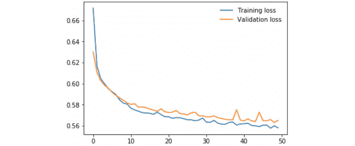图3.10:显示训练和验证损失的图
- Plot the accuracy of both sets:
plt.plot(train_acc, label="Training accuracy") plt.plot(dev_acc, label="Validation accuracy") plt.legend(frameon=False) plt.show()
下面是从这段代码中得出的图表:

图3.11:显示器械包精确度的图表
活动5:提高模特的表现
解决方案:
- 导入与上一练习中相同的库:
import pandas as pd import numpy as np from sklearn.model_selection import train_test_split from sklearn.utils import shuffle from sklearn.metrics import accuracy_score import torch from torch import nn, optim import torch.nn.functional as F import matplotlib.pyplot as plt torch.manual_seed(0)
- 加载数据并从目标中分割要素。接下来，使用60:20:20的拆分比例将数据拆分为三个子集(培训、验证和测试)。最后，将验证集和测试集转换成PyTorch张量，就像您在之前的活动中所做的一样:
data = pd.read_csv("dccc_prepared.csv") X = data.iloc[:,:-1] y = data["default payment next month"] X_new, X_test, y_new, y_test = train_test_split(X, y, test_size=0.2, random_state=0) dev_per = X_test.shape[0]/X_new.shape[0] X_train, X_dev, y_train, y_dev = train_test_split(X_new, y_new, test_size=dev_per, random_state=0) X_dev_torch = torch.tensor(X_dev.values).float() y_dev_torch = torch.tensor(y_dev.values) X_test_torch = torch.tensor(X_test.values).float() y_test_torch = torch.tensor(y_test.values) - Considering that the model is suffering from high bias, the focus should be on increasing the number of epochs or increasing the size of the network by adding additional layers or units to each layer.
目标应该是验证集的准确度接近80%。
以下代码片段来自性能最佳的模型，该模型是经过多次微调后获得的:
# class defining model's architecture and operations between layers class Classifier(nn.Module): def __init__(self, input_size): super().__init__() self.hidden_1 = nn.Linear(input_size, 100) self.hidden_2 = nn.Linear(100, 100) self.hidden_3 = nn.Linear(100, 50) self.hidden_4 = nn.Linear(50,50) self.output = nn.Linear(50, 2) self.dropout = nn.Dropout(p=0.1) #self.dropout_2 = nn.Dropout(p=0.1) def forward(self, x): z = self.dropout(F.relu(self.hidden_1(x))) z = self.dropout(F.relu(self.hidden_2(z))) z = self.dropout(F.relu(self.hidden_3(z))) z = self.dropout(F.relu(self.hidden_4(z))) out = F.log_softmax(self.output(z), dim=1) return out # parameters definition model = Classifier(X_train.shape[1]) criterion = nn.NLLLoss() optimizer = optim.Adam(model.parameters(), lr=0.001) epochs = 3000 batch_size = 128 # training process train_losses, dev_losses, train_acc, dev_acc= [], [], [], [] x_axis = [] for e in range(1, epochs + 1): X_, y_ = shuffle(X_train, y_train) running_loss = 0 running_acc = 0 iterations = 0 for i in range(0, len(X_), batch_size): iterations += 1 b = i + batch_size X_batch = torch.tensor(X_.iloc[i:b,:].values).float() y_batch = torch.tensor(y_.iloc[i:b].values) log_ps = model(X_batch) loss = criterion(log_ps, y_batch) optimizer.zero_grad() loss.backward() optimizer.step() running_loss += loss.item() ps = torch.exp(log_ps) top_p, top_class = ps.topk(1, dim=1) running_acc += accuracy_score(y_batch, top_class) dev_loss = 0 acc = 0 # Turn off gradients for validation, saves memory and computations with torch.no_grad(): log_dev = model(X_dev_torch) dev_loss = criterion(log_dev, y_dev_torch) ps_dev = torch.exp(log_dev) top_p, top_class_dev = ps_dev.topk(1, dim=1) acc = accuracy_score(y_dev_torch, top_class_dev) if e%50 == 0 or e == 1: x_axis.append(e) train_losses.append(running_loss/iterations) dev_losses.append(dev_loss) train_acc.append(running_acc/iterations) dev_acc.append(acc) print("Epoch: {}/{}.. ".format(e, epochs), "Training Loss: {:.3f}.. ".format(running_loss/ iterations), "Validation Loss: {:.3f}.. ".format(dev_loss), "Training Accuracy: {:.3f}.. ".format(running_acc/ iterations), "Validation Accuracy: {:.3f}".format(acc))注意
本次活动附带的Jupyter笔记本可以在之前共享的GitHub资源库中找到。在那里，您会发现对模型进行微调的不同尝试及其结果。表现最好的型号在笔记本的末尾。
- 绘制两组数据的损失和精度:
注
plt.plot(x_axis,train_losses, label='Training loss') plt.plot(x_axis, dev_losses, label='Validation loss') plt.legend(frameon=False) plt.show()
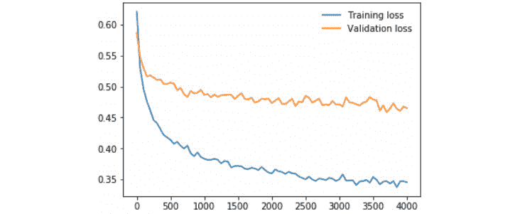图3.12:显示组损失的图
plt.plot(x_axis, train_acc, label="Training accuracy") plt.plot(x_axis, dev_acc, label="Validation accuracy") plt.legend(frameon=False) plt.show()
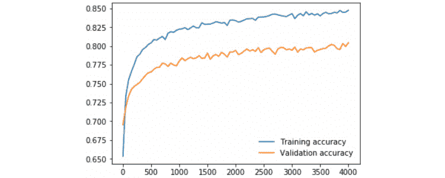图3.13:显示组精度的图
- Using the best-performing model, perform prediction over the testing set (which should not have been used during the fine-tuning process). Compare the prediction to the ground truth by calculating the accuracy of the model over this set:
model.eval() test_pred = model(X_test_torch) test_pred = torch.exp(test_pred) top_p, top_class_test = test_pred.topk(1, dim=1) acc_test = accuracy_score(y_test_torch, top_class_test)
通过模型架构和上面定义的参数获得的精度应该在80%左右。
活动6:利用你的模型
解决方案:
- 打开您在之前的活动中使用的Jupyter笔记本。
- Save a Python file containing the class where you define the architecture of your best-performing module. Make sure to import PyTorch's required libraries and modules. Name it
final_model.py.该文件应该如下所示:
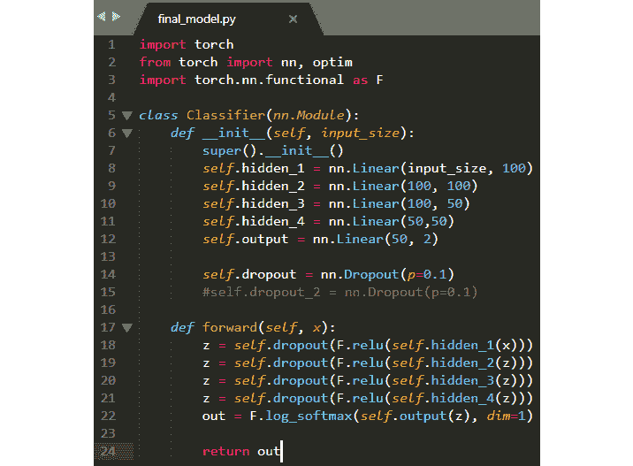图3.14:final _ model . py的截图
- 保存性能最好的模型。确保保存输入单位的信息以及模型的参数。命名为
checkpoint.pth:checkpoint = {"input": X_train.shape[1], "state_dict": model.state_dict()} torch.save(checkpoint, "checkpoint.pth") - 打开新的Jupyter笔记本。
- 导入PyTorch，以及之前创建的Python文件:
import torch import final_model
- 创建一个加载模型的函数:
def load_model_checkpoint(path): checkpoint = torch.load(path) model = final_model.Classifier(checkpoint["input"]) model.load_state_dict(checkpoint["state_dict"]) return model model = load_model_checkpoint("checkpoint.pth") - Perform a prediction by inputting the following tensor into your model:
example = torch.tensor([[0.0606, 0.5000, 0.3333, 0.4828, 0.4000, 0.4000, 0.4000, 0.4000, 0.4000, 0.4000, 0.1651, 0.0869, 0.0980, 0.1825, 0.1054, 0.2807, 0.0016, 0.0000, 0.0033, 0.0027, 0.0031, 0.0021]]).float() pred = model(example) pred = torch.exp(pred) top_p, top_class_test = pred.topk(1, dim=1)
通过打印
top_class_test，我们获得了模型的预测，在本例中等于1 (yes)。 - 使用JIT模块转换模型:
traced_script = torch.jit.trace(model, example, check_trace=False)
- Perform a prediction by inputting the following information to the traced script of your model:
prediction = traced_script(example) prediction = torch.exp(prediction) top_p_2, top_class_test_2 = prediction.topk(1, dim=1)
通过打印
top_class_test_2，我们从您的模型的跟踪脚本表示中得到预测，它也等于1(是)。
第四章:卷积神经网络
活动7:为图像分类问题构建一个CNN
解决方案:
- 导入以下库:
import numpy as np import torch from torch import nn, optim import torch.nn.functional as F from torchvision import datasets import torchvision.transforms as transforms from torch.utils.data.sampler import SubsetRandomSampler from sklearn.metrics import accuracy_score import matplotlib.pyplot as plt
- 设置要对数据执行的转换，这将是数据到张量的转换和像素值的归一化:
transform = transforms.Compose([transforms.ToTensor(), transforms.Normalize((0.5, 0.5, 0.5), (0.5, 0.5, 0.5))])
- 设置100个图像的批量大小，并从
CIFAR10数据集:batch_size = 100 train_data = datasets.CIFAR10('data', train=True, download=True, transform=transform) test_data = datasets.CIFAR10('data', train=False, download=True, transform=transform)下载训练和测试数据 - 使用20%的验证大小，定义将用于将数据集分成这两个集合的训练和验证采样器:
dev_size = 0.2 idx = list(range(len(train_data))) np.random.shuffle(idx) split_size = int(np.floor(dev_size * len(train_data))) train_idx, dev_idx = idx[split_size:], idx[:split_size] train_sampler = SubsetRandomSampler(train_idx) dev_sampler = SubsetRandomSampler(dev_idx)
- 使用
DataLoader()功能定义要使用的每组数据的批次:train_loader = torch.utils.data.DataLoader(train_data, batch_size=batch_size, sampler=train_sampler) dev_loader = torch.utils.data.DataLoader(train_data, batch_size=batch_size, sampler=dev_sampler) test_loader = torch.utils.data.DataLoader(test_data, batch_size=batch_size)
- 定义您的网络架构。为此，请使用以下信息:
- Conv1:卷积层，将彩色图像作为输入，并通过10个大小为3的过滤器。填充和步幅都应设置为1。
- Conv2:将输入数据通过20个大小为3的过滤器的卷积层。填充和步幅都应设置为1。
- Conv3:将输入数据通过40个大小为3的过滤器的卷积层。填充和步幅都应设置为1。
- 在每个卷积层之后使用ReLU激活函数。
- 每个卷积层之后的池层，过滤器大小和步幅为2。
- 展平图像后，一个设定为20%的下降项。
- Linear1:一个完全连接的层，接收来自前一层的展平矩阵作为输入，并生成100个单位的输出。对该层使用ReLU激活功能。这里的退出项设置为20%。
- Linear2:一个全连接的层，生成10个输出，每个类标签一个。对输出层使用
log_softmax激活功能:class CNN(nn.Module): def __init__(self): super(CNN, self).__init__() self.conv1 = nn.Conv2d(3, 10, 3, 1, 1) self.conv2 = nn.Conv2d(10, 20, 3, 1, 1) self.conv3 = nn.Conv2d(20, 40, 3, 1, 1) self.pool = nn.MaxPool2d(2, 2) self.linear1 = nn.Linear(40 * 4 * 4, 100) self.linear2 = nn.Linear(100, 10) self.dropout = nn.Dropout(0.2) def forward(self, x): x = self.pool(F.relu(self.conv1(x))) x = self.pool(F.relu(self.conv2(x))) x = self.pool(F.relu(self.conv3(x))) x = x.view(-1, 40 * 4 * 4) x = self.dropout(x) x = F.relu(self.linear1(x)) x = self.dropout(x) x = F.log_softmax(self.linear2(x), dim=1) return x
- 定义训练模型所需的所有参数。训练它100个纪元:
model = CNN() loss_function = nn.NLLLoss() optimizer = optim.Adam(model.parameters(), lr=0.001) epochs = 50
- 训练您的网络，并确保保存训练集和验证集的损失值和准确度值:
train_losses, dev_losses, train_acc, dev_acc= [], [], [], [] x_axis = [] for e in range(1, epochs+1): losses = 0 acc = 0 iterations = 0 model.train() for data, target in train_loader: iterations += 1 pred = model(data) loss = loss_function(pred, target) optimizer.zero_grad() loss.backward() optimizer.step() losses += loss.item() p = torch.exp(pred) top_p, top_class = p.topk(1, dim=1) acc += accuracy_score(target, top_class) dev_losss = 0 dev_accs = 0 iter_2 = 0 if e%5 == 0 or e == 1: x_axis.append(e) with torch.no_grad(): model.eval() for data_dev, target_dev in dev_loader: iter_2 += 1 dev_pred = model(data_dev) dev_loss = loss_function(dev_pred, target_dev) dev_losss += dev_loss.item() dev_p = torch.exp(dev_pred) top_p, dev_top_class = dev_p.topk(1, dim=1) dev_accs += accuracy_score(target_dev, dev_top_class) train_losses.append(losses/iterations) dev_losses.append(dev_losss/iter_2) train_acc.append(acc/iterations) dev_acc.append(dev_accs/iter_2) print("Epoch: {}/{}.. ".format(e, epochs), "Training Loss: {:.3f}.. ".format(losses/iterations), "Validation Loss: {:.3f}.. ".format(dev_losss/iter_2), "Training Accuracy: {:.3f}.. ".format(acc/iterations), "Validation Accuracy: {:.3f}".format(dev_accs/iter_2)) - Plot the loss and accuracy of both sets:
plt.plot(x_axis,train_losses, label='Training loss') plt.plot(x_axis, dev_losses, label='Validation loss') plt.legend(frameon=False) plt.show()
生成的图应该类似于下图:
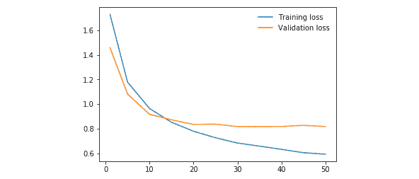图4.19:显示集合丢失的结果图
plt.plot(x_axis, train_acc, label="Training accuracy") plt.plot(x_axis, dev_acc, label="Validation accuracy") plt.legend(frameon=False) plt.show()
精度应该类似于下图:
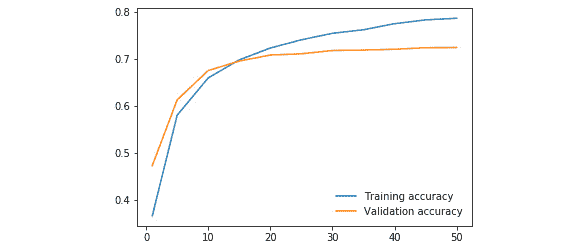图4.20:显示集合精确度的结果图
可以看出，在第十五个时期之后，过度拟合开始影响模型。
- Check the model's accuracy on the testing set:
model.eval() iter_3 = 0 acc_test = 0 for data_test, target_test in test_loader: iter_3 += 1 test_pred = model(data_test) test_pred = torch.exp(test_pred) top_p, top_class_test = test_pred.topk(1, dim=1) acc_test += accuracy_score(target_test, top_class_test) print(acc_test/iter_3)测试集的准确性与其他2个集的准确性非常相似，这意味着该模型能够在看不见的数据上表现得同样好。应该在72%左右。
活动8:实施数据扩充
解决方案:
- Duplicate the notebook from the previous activity.
为了解决这个活动，除了下一步中提到的变量定义之外，不需要修改任何代码。
- 更改
transform变量的定义，除了将数据标准化并转换为张量外，还包括以下转换:- 对于训练/验证集，一个概率为50% (0.5)的
RandomHorizontalFlip函数和一个概率为10% (0.1)的RandomGrayscale函数。 - 对于测试集，不要添加任何其他转换:
transform = { "train": transforms.Compose([ transforms.RandomHorizontalFlip(0.5), transforms.RandomGrayscale(0.1), transforms.ToTensor(), transforms.Normalize((0.5, 0.5, 0.5), (0.5, 0.5, 0.5))]), "test": transforms.Compose([ transforms.ToTensor(), transforms.Normalize((0.5, 0.5, 0.5), (0.5, 0.5, 0.5))])}
- 对于训练/验证集，一个概率为50% (0.5)的
- Train the model for 100 epochs.
训练集和验证集的损失和准确度的结果图应类似于如下所示:
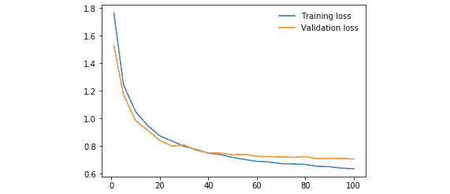图4.21:显示器械包丢失的结果图
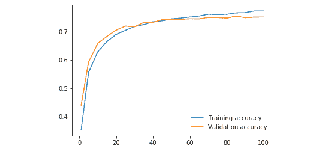图4.22:显示集合精确度的结果图
通过添加数据扩充，可以提高模型的性能，并减少正在发生的过拟合。
- Calculate the accuracy of the resulting model on the testing set.
该模型在测试集上的性能达到了76%左右。
活动9:实现批量规范化
解决方案:
- 复制上一个活动中的笔记本。
- Add batch normalization to each convolutional layer, as well as to the first fully-connected layer.
网络的最终架构应该如下所示:
class Net(nn.Module): def __init__(self): super(Net, self).__init__() self.conv1 = nn.Conv2d(3, 10, 3, 1, 1) self.norm1 = nn.BatchNorm2d(10) self.conv2 = nn.Conv2d(10, 20, 3, 1, 1) self.norm2 = nn.BatchNorm2d(20) self.conv3 = nn.Conv2d(20, 40, 3, 1, 1) self.norm3 = nn.BatchNorm2d(40) self.pool = nn.MaxPool2d(2, 2) self.linear1 = nn.Linear(40 * 4 * 4, 100) self.norm4 = nn.BatchNorm1d(100) self.linear2 = nn.Linear(100, 10) self.dropout = nn.Dropout(0.2) def forward(self, x): x = self.pool(self.norm1(F.relu(self.conv1(x)))) x = self.pool(self.norm2(F.relu(self.conv2(x)))) x = self.pool(self.norm3(F.relu(self.conv3(x)))) x = x.view(-1, 40 * 4 * 4) x = self.dropout(x) x = self.norm4(F.relu(self.linear1(x))) x = self.dropout(x) x = F.log_softmax(self.linear2(x), dim=1) return x - Train the model for 100 epochs.
训练集和验证集的损失和准确性的结果图应类似于下面显示的图:
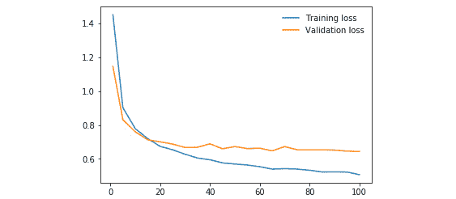图4.23:显示器械包丢失的结果图
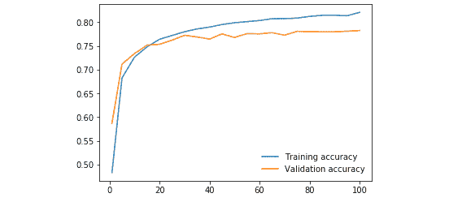图4.24:显示集合丢失的结果图
虽然过度拟合再次被引入到模型中，但可以看到两组的性能都有所提高。
注意
虽然本章没有探讨，但理想的做法是在网络架构中增加压差，以降低高方差。请随意尝试，看看您是否能够进一步提高性能。
- Calculate the accuracy of the resulting model on the testing set.
模型在测试集上的准确率应该在78%左右。
第五章:风格转移
活动10:进行风格转移
解决方案:
注意
为了能够多次(30，000次)运行该活动，使用了GPU。根据这一点，可以在GitHub的资源库中找到一个副本，该副本将下面的代码改编为使用GPU工作。
- 导入所需的库:
import numpy as np import torch from torch import nn, optim from PIL import Image import matplotlib.pyplot as plt from torchvision import transforms, models
- 指定要对输入图像执行的变换。一定要把它们调整到相同的大小，转换成张量，归一化:
imsize = 224 loader = transforms.Compose([ transforms.Resize(imsize), transforms.ToTensor(), transforms.Normalize((0.485, 0.456, 0.406), (0.229, 0.224, 0.225))])
- 定义一个图像加载函数。它应该打开图像并加载它。调用图像加载器函数来加载两个输入图像:
def image_loader(image_name): image = Image.open(image_name) image = loader(image).unsqueeze(0) return image content_img = image_loader("images/landscape.jpg") style_img = image_loader("images/monet.jpg") - 为了能够显示图像，设置转换以恢复图像的正常化，并将张量转换为PIL图像:
unloader = transforms.Compose([ transforms.Normalize((-0.485/0.229, -0.456/0.224, -0.406/0.225), (1/0.229, 1/0.224, 1/0.225)), transforms.ToPILImage()])
- 创建一个能够在张量上执行上述变换的函数。调用两个图像的函数并绘制结果:
def tensor2image(tensor): image = tensor.clone() image = image.squeeze(0) image = unloader(image) return image plt.figure() plt.imshow(tensor2image(content_img)) plt.title("Content Image") plt.show() plt.figure() plt.imshow(tensor2image(style_img)) plt.title("Style Image") plt.show() - 装载VGG-19型号:
model = models.vgg19(pretrained=True).features for param in model.parameters(): param.requires_grad_(False)
- 创建将相关层的索引(键)映射到名称(值)的字典。然后，创建一个函数来提取相关图层的要素地图。使用它们来提取两个输入图像的特征:
relevant_layers = {'0': 'conv1_1', '5': 'conv2_1', '10': 'conv3_1', '19': 'conv4_1', '21': 'conv4_2', '28': 'conv5_1'} def features_extractor(x, model, layers): features = {} for index, layer in model._modules.items(): if index in layers: x = layer(x) features[layers[index]] = x return features content_features = features_extractor(content_img, model, relevant_layers) style_features = features_extractor(style_img, model, relevant_layers) - 计算样式特征的gram矩阵。同样，创建初始目标图像:
style_grams = {} for i in style_features: layer = style_features[i] _, d1, d2, d3 = layer.shape features = layer.view(d1, d2 * d3) gram = torch.mm(features, features.t()) style_grams[i] = gram target_img = content_img.clone().requires_grad_(True) - 设置不同样式层的权重，以及内容和样式损失的权重:
style_weights = {'conv1_1': 1., 'conv2_1': 0.8, 'conv3_1': 0.6, 'conv4_1': 0.4, 'conv5_1': 0.2} alpha = 1 beta = 1e6 - 运行模型500次迭代。在开始训练模型之前定义Adam优化算法，使用0.001作为学习率。
注
注for i in range(1, iterations+1): target_features = features_extractor(target_img, model, relevant_layers) content_loss = torch.mean((target_features['conv4_2'] - content_features['conv4_2'])**2) style_losses = 0 for layer in style_weights: target_feature = target_features[layer] _, d1, d2, d3 = target_feature.shape target_reshaped = target_feature.view(d1, d2 * d3) target_gram = torch.mm(target_reshaped, target_reshaped.t()) style_gram = style_grams[layer] style_loss = style_weights[layer] * torch.mean((target_gram - style_gram)**2) style_losses += style_loss / (d1 * d2 * d3) total_loss = alpha * content_loss + beta * style_loss optimizer.zero_grad() total_loss.backward() optimizer.step() if i % print_statement == 0 or i == 1: print('Total loss: ', total_loss.item()) plt.imshow(tensor2image(target_img)) plt.show() - Plot both content and target images to compare the results:
fig, (ax1, ax2) = plt.subplots(1, 2, figsize=(20, 10)) ax1.imshow(tensor2image(content_img)) ax2.imshow(tensor2image(target_img)) plt.show()
以下是从这段代码中得出的情节:
图5.10:内容和目标图像的绘图
第六章:用RNNs分析数据序列
活动11:使用简单的RNN进行时间序列预测
解决方案:
- 导入所需的库，如下:
import pandas as pd import matplotlib.pyplot as plt import torch from torch import nn, optim
- 将种子设置为0，使用下面的代码行复制本书中的结果:
torch.manual_seed(10)
- 加载数据集，然后对其进行切片，使其包含所有行，但只包含从索引1到52的列:
data = pd.read_csv("Sales_Transactions_Dataset_Weekly.csv") data = data.iloc[:,1:53] data.head() - 从整个数据集中随机选择五种产品，按周绘制销售交易图。进行随机抽样时使用随机种子0，以获得与当前活动相同的结果:
plot_data = data.sample(5, random_state=0) x = range(1,53) plt.figure(figsize=(10,5)) for i,row in plot_data.iterrows(): plt.plot(x,row) plt.legend(plot_data.index) plt.xlabel("Weeks") plt.ylabel("Sales transactions per product") plt.show() - 结果图应该如下:

图6.21:输出图
- 创建
inputs和targets变量，这些变量将被输入网络以创建模型。这些变量应该具有相同的形状，并转换为PyTorch张量。 inputs变量应该包含所有周的所有产品的数据，除了最后一周——因为模型的想法是预测最后一周。targets变量应该比inputs变量早一步——即targets变量的第一个值应该是输入变量的第二个值，依此类推，直到目标变量的最后一个值(应该是inputs变量之外的最后一周):data_train = data.iloc[:,:-1] inputs = torch.Tensor(data_train.values).unsqueeze(1) targets = data_train.shift(-1, axis="columns", fill_value=data.iloc[:,-1]).astype(dtype = "float32") targets = torch.Tensor(targets.values)
- 创建一个包含网络架构的类；注意，全连接层的输出大小应该是1:
class RNN(nn.Module): def __init__(self, input_size, hidden_size, num_layers): super().__init__() self.hidden_size = hidden_size self.rnn = nn.RNN(input_size, hidden_size, num_layers, batch_first=True) self.output = nn.Linear(hidden_size, 1) def forward(self, x, hidden): out, hidden = self.rnn(x, hidden) out = out.view(-1, self.hidden_size) out = self.output(out) return out, hidden
- 初始化包含模型的
class函数；然后，馈入输入大小，每个递归层的神经元数(10)，递归层数(1):model = RNN(data_train.shape[1], 10, 1)
- 定义损失函数、优化算法和训练网络的时期数；例如，您可以使用均方误差损失函数、Adam优化器和10，000个历元:
loss_function = nn.MSELoss() optimizer = optim.Adam(model.parameters(), lr=0.001) epochs = 10000
- 使用
for循环通过遍历所有时期来执行训练过程。在每个时期，必须进行预测，随后计算损失函数并优化网络参数。保存每个历元的损失:注
losses = [] for i in range(1, epochs+1): hidden = None pred, hidden = model(inputs, hidden) loss = loss_function(targets, pred) optimizer.zero_grad() loss.backward() optimizer.step() losses.append(loss.item()) if i%1000 == 0: print("epoch: ", i, "=... Loss function: ", losses[-1]) - 绘制所有时期的损失，如下:
x_range = range(len(losses)) plt.plot(x_range, losses) plt.xlabel("epochs") plt.ylabel("Loss function") plt.show() - 结果图应如下所示: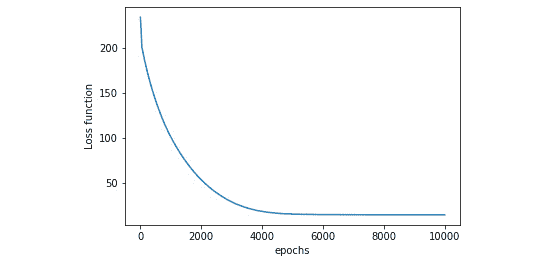
图6.22:显示所有时段损失的图
- 使用散点图，显示在训练过程的最后一个时期获得的预测与基础真实值(即，上周的销售交易):
x_range = range(len(data)) target = data.iloc[:,-1].values.reshape(len(data),1) plt.figure(figsize=(15,5)) plt.scatter(x_range[:20], target[:20]) plt.scatter(x_range[:20], pred.detach().numpy()[:20]) plt.legend(["Ground truth", "Prediction"]) plt.xlabel("Product") plt.ylabel("Sales Transactions") plt.xticks(range(0, 20)) plt.show() - 最终的剧情应该是这样的:
图6.23:显示预测的散点图
活动12:利用LSTM网络生成文本
解决方案:
- 导入所需的库，如下所示:
import math import numpy as np import matplotlib.pyplot as plt import torch from torch import nn, optim import torch.nn.functional as F
- 打开爱丽丝梦游仙境中的文字，并将其读入笔记本。打印前100个字符的摘录和文本文件的总长度:
with open('alice.txt', 'r', encoding='latin1') as f: data = f.read() print("Extract: ", data[:50]) print("Length: ", len(data)) - 创建一个包含数据集中未复制字符列表的变量。然后，创建一个字典，将每个字符映射到一个整数，其中字符是键，整数是值:
chars = list(set(data)) indexer = {char: index for (index, char) in enumerate(chars)} - 将数据集的每个字母编码成成对的整数。打印前100个编码字符和数据集编码版本的总长度:
indexed_data = [] for c in data: indexed_data.append(indexer[c]) print("Indexed extract: ", indexed_data[:50]) print("Length: ", len(indexed_data)) - 创建一个函数，它接收一个批处理并将其编码为一个热矩阵:
def index2onehot(batch): batch_flatten = batch.flatten() onehot_flat = np.zeros((batch.shape[0] * batch.shape[1],len(indexer))) onehot_flat[range(len(batch_flatten)), batch_flatten] = 1 onehot = onehot_flat.reshape((batch.shape[0], batch.shape[1], -1)) return onehot
- 创建定义网络架构的类。这个类应该包含一个额外的函数来初始化LSTM层的状态:
class LSTM(nn.Module): def __init__(self, char_length, hidden_size, n_layers): super().__init__() self.hidden_size = hidden_size self.n_layers = n_layers self.lstm = nn.LSTM(char_length, hidden_size, n_layers, batch_first=True) self.output = nn.Linear(hidden_size, char_length) def forward(self, x, states): out, states = self.lstm(x, states) out = out.contiguous().view(-1, self.hidden_size) out = self.output(out) return out, states def init_states(self, batch_size): hidden = next(self.parameters()).data.new( self.n_layers, batch_size, self.hidden_size).zero_() cell = next(self.parameters()).data.new(self.n_layers, batch_size, self.hidden_size). zero_() states = (hidden, cell) return states
- 确定要从数据集创建的批次数量，记住每个批次应包含100个序列，每个序列的长度为50。接下来，将编码数据分割成100个序列:
n_seq = 100 ## Number of sequences per batch seq_length = 50 n_batches = math.floor(len(indexed_data) / n_seq / seq_length) total_length = n_seq * seq_length * n_batches x = indexed_data[:total_length] x = np.array(x).reshape((n_seq,-1))
- 初始化你的模型，使用256作为总共2个递归层的隐藏单元数:
model = LSTM(len(chars), 256, 2)
- 定义损失函数和优化算法。使用Adam优化器和交叉熵损失:
loss_function = nn.CrossEntropyLoss() optimizer = optim.Adam(model.parameters(), lr=0.001) epochs = 20
- 训练网络20个历元，记住，在每个历元中，数据必须被分成序列长度为50的批。这意味着，每个历元有100个历元，每个历元的序列为50:
losses = [] for e in range(1, epochs+1): states = model.init_states(n_seq) batch_loss = [] for b in range(0, x.shape[1], seq_length): x_batch = x[:,b:b+seq_length] if b == x.shape[1] - seq_length: y_batch = x[:,b+1:b+seq_length] y_batch = np.hstack((y_batch, indexer["."] * np.ones((y_batch.shape[0],1)))) else: y_batch = x[:,b+1:b+seq_length+1] x_onehot = torch.Tensor(index2onehot(x_batch)) y = torch.Tensor(y_batch).view(n_seq * seq_length) pred, states = model(x_onehot, states) loss = loss_function(pred, y.long()) optimizer.zero_grad() loss.backward(retain_graph=True) optimizer.step() batch_loss.append(loss.item()) losses.append(np.mean(batch_loss)) if e%1 == 0: print("epoch: ", e, "... Loss function: ", losses[-1]) - 绘制
loss函数随时间的进度:x_range = range(len(losses)) plt.plot(x_range, losses) plt.xlabel("epochs") plt.ylabel("Loss function") plt.show() - 图表应该如下: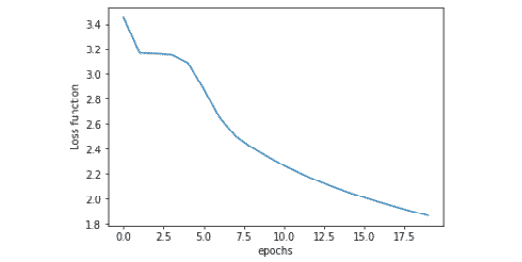
图6.24:显示损失函数进度的图表
- Feed the following sentence starter into the trained model and complete the sentence:
“所以她在心里考虑”
starter = "So she was considering in her own mind " states = None for ch in starter: x = np.array([[indexer[ch]]]) x = index2onehot(x) x = torch.Tensor(x) pred, states = model(x, states) counter = 0 while starter[-1] != "." and counter < 50: counter += 1 x = np.array([[indexer[starter[-1]]]]) x = index2onehot(x) x = torch.Tensor(x) pred, states = model(x, states) pred = F.softmax(pred, dim=1) p, top = pred.topk(10) p = p.detach().numpy()[0] top = top.numpy()[0] index = np.random.choice(top, p=p/p.sum()) starter += chars[index] print(starter) - 考虑到在选择每个字符时存在随机因素，最后的句子会有所不同，但是它应该看起来像这样:
So she was considering in her own mind of would the cace to she tount ang to ges seokn.
- 考虑到网络一次选择一个字符，而没有对之前创建的单词的长期记忆，前面的句子没有意义。然而，我们可以看到，仅仅经过20个时代，网络已经能够形成一些有意义的单词。
活动13:为情感分析执行自然语言处理
解决方案:
- 导入所需的库:
import pandas as pd import numpy as np import matplotlib.pyplot as plt from string import punctuation from sklearn.metrics import accuracy_score import torch from torch import nn, optim import torch.nn.functional as F
- 加载包含来自Amazon的1，000条产品评论的数据集，这些评论带有标签0(表示负面评论)或1(表示正面评论)。将数据分成两个变量——一个包含评论，另一个包含标签:
data = pd.read_csv("amazon_cells_labelled.txt", sep="\t", header=None) reviews = data.iloc[:,0].str.lower() sentiment = data.iloc[:,1].values - 删除评论中的标点:
for i in punctuation: reviews = reviews.str.replace(i,"")
- 创建一个包含所有评论词汇的变量。此外，创建一个字典，将每个单词映射到一个整数，其中单词是键，整数是值:
words = ' '.join(reviews) words = words.split() vocabulary = set(words) indexer = {word: index for (index, word) in enumerate(vocabulary)} - 通过将评论中的每个单词替换为成对的整数来对评论数据进行编码:
indexed_reviews = [] for review in reviews: indexed_reviews.append([indexer[word] for word in review.split()])
- 创建一个包含网络架构的类。确保你包含了一个嵌入层:
class LSTM(nn.Module): def __init__(self, vocab_size, embed_dim, hidden_size, n_layers): super().__init__() self.hidden_size = hidden_size self.embedding = nn.Embedding(vocab_size, embed_dim) self.lstm = nn.LSTM(embed_dim, hidden_size, n_layers, batch_first=True) self.output = nn.Linear(hidden_size, 1) def forward(self, x): out = self.embedding(x) out, _ = self.lstm(out) out = out.contiguous().view(-1, self.hidden_size) out = self.output(out) out = out[-1,0] out = torch.sigmoid(out) return out
- 对于3个LSTM层，使用64个嵌入维度和128个神经元来初始化模型:
model = LSTM(len(vocabulary), 64, 128, 3)
- 定义损失函数、优化算法和要训练的时期数。例如，您可以使用二进制交叉熵损失作为损失函数、Adam优化器，并训练10个时期:
loss_function = nn.BCELoss() optimizer = optim.Adam(model.parameters(), lr=0.001) epochs = 10
- 创建一个
for循环，遍历不同的时期，并单独遍历每一个评审。对于每个检查，执行预测，计算损失函数，并更新网络的参数。此外，计算该训练数据的网络精度:losses = [] acc = [] for e in range(1, epochs+1): single_loss = [] preds = [] targets = [] for i, r in enumerate(indexed_reviews): if len(r) <= 1: continue x = torch.Tensor([r]).long() y = torch.Tensor([sentiment[i]]) pred = model(x) loss = loss_function(pred, y) optimizer.zero_grad() loss.backward() optimizer.step() final_pred = np.round(pred.detach().numpy()) preds.append(final_pred) targets.append(y) single_loss.append(loss.item()) losses.append(np.mean(single_loss)) accuracy = accuracy_score(targets,preds) acc.append(accuracy) if e%1 == 0: print("Epoch: ", e, "... Loss function: ", losses[-1], "... Accuracy: ", acc[-1]) - 绘制损失函数和精度随时间的变化过程:
x_range = range(len(losses)) plt.plot(x_range, losses) plt.xlabel("epochs") plt.ylabel("Loss function") plt.show() - 输出图应如下所示: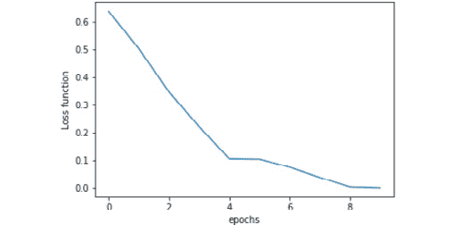
图6.25:显示损失函数
x_range = range(len(acc)) plt.plot(x_range, acc) plt.xlabel("epochs") plt.ylabel("Accuracy score") plt.show()进度的图 - 该图应该如下所示: